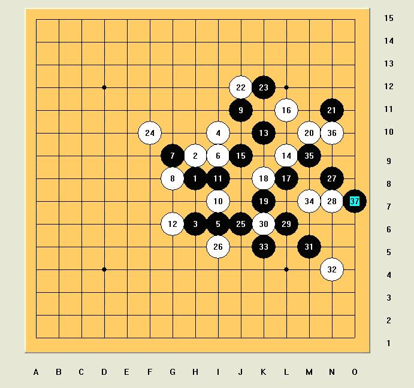

比赛聊天，来人给这两个人各来一个违例！
比赛聊天，来人给这两个人各来一个违例！
=======上图对应的爱五子棋谱代码如下，以便你拆解：========
h8i9i7g9h7h10g7j7h9j8g11j6j5i10
======================================================
第一轮，胜张楠
考虑了很久，我终于鼓起勇气，开出了浦月。无奈对手走出来的却是必
败的5，就这样速胜了第一局。
下面是本来我想考的变化，这个13对我来说还是很神奇的。
=======上图对应的爱五子棋谱代码如下，以便你拆解：========
h8i9i7g9j8h6j9k8k10j10l11m12m8l9j7h7m7
======================================================

第二轮，胜朱建锋
望着对面的朱建锋，我假装镇定地笑了笑，他也对我笑了笑，可我心里
在哭，哭得泪流成河。。。我可不想
 超级无敌的混混，俺顶你~
超级无敌的混混，俺顶你~蒲月大师…… 哈哈哈
36、38哪里像是想守和我的……
不过看你的棋评挺舒服的，不像我的废话比较多。
对高飞那盘，24没防啦，20比较正常吧，22是败着
记得以前好像世团赛，吴昊对Tunnet的，走出了类似的左上的局部形状，不过这里有D7的连接，更强

高飞：我感觉没杀
我：我算算先
过了几分钟
高飞：是杀了，没想到对手这么强
我没理他，又过了几分钟
高飞：和吗
我笑了：等我算不到杀再和
高飞：你这人太贱了
我没理他，心里在笑
这种VCT对我来说不难，等我算干净他就死了。
比赛聊天，来人给这两个人各来一个违例！
九指进步太快了!比我去年全锦赛想象的要快的多~可惜生不逢时,每次全国赛都止步四强.希望他再接再励哦.争取更大的进步
应该说九指是最稳定的选手，08 09有谁都进四强的？
引用：
原文由 黄药师 发表于 2009-10-9 18:19:23 :高飞：我感觉没杀
我：我算算先
过了几分钟
高飞：是杀了，没想到对手这么强
我没理他，又过了几分钟
高飞：和吗
我笑了：等我算不到杀再和
高飞：你这人太贱了
我没理他，心里在笑
这种VCT对我来说不难，等我算干净他就死了。
从人性化来讲：比赛时是可以和当前局的对手聊天的，只要对手不提出抗议可以不用算违例的.以上的聊天文字，可以算作是一个小笑话，不用太放心上。假如：当时混混算不出VCT，可以提出抗议，理由是：高飞干挠他算棋~！那么，高飞会弄一个使用盘外招的骂名外，还得吃个违例，当然，混混也会成为高飞说的那样：你这人太贱了~！！！！！
权当笑话，没有争对高老师和混混老师的！
 新星
新星
未来的冠军,加油加油!